Homepage CTAs Improvement
Users weren't noticing the homepage CTAs. A focused, data-informed design iteration to improve visibility and drive engagement.
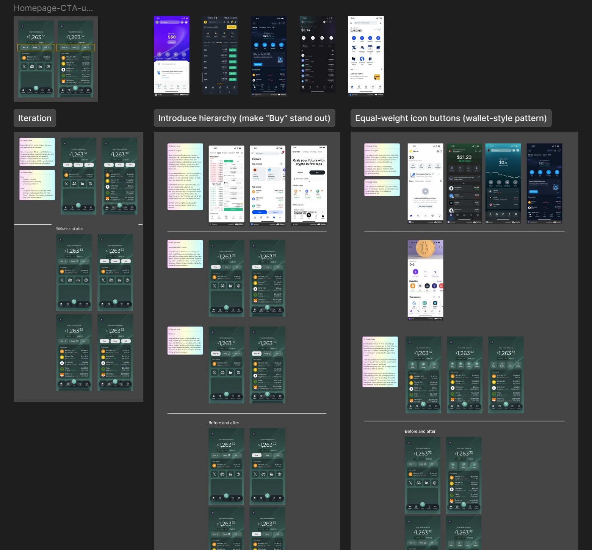
Overview
Following the 2.0 app launch, RockWallet began conducting user analytics to better understand how users were interacting with the product. One finding caught immediate attention — the VP of Product shared data revealing that a significantly high percentage of users were not clicking the three main CTA buttons on the homepage, leaving these core actions virtually unnoticed.
These three buttons — Buy, Swap and Sell — represent the primary actions RockWallet wants users to take — making their low interaction rate a direct concern for the product's core user experience and business goals. A focused design iteration was initiated to investigate why the buttons were being overlooked and explore how to improve their visibility and discoverability.
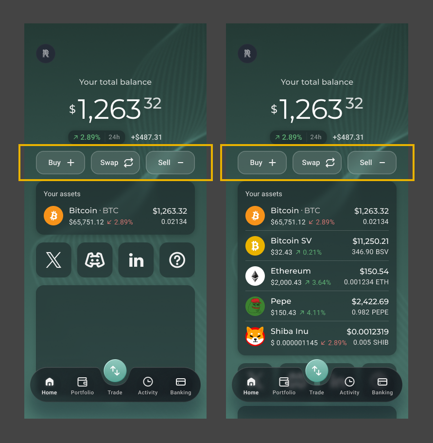
The Problem
- The root cause was visual: the buttons used an outlined (ghost) style against a dark green background, making them low-contrast and difficult to notice
- The buttons blended into the interface rather than standing out as actionable elements — especially for new users who were still learning the product
- The issue was identified post-launch as part of ongoing user analytics, making this an iterative improvement driven by real data rather than assumption
Research
Since the issue was rooted in visual design rather than functionality, the team went back to the research phase to understand how other platforms handle primary CTAs on the homepage. Competitive research was conducted across two categories of apps:
Crypto exchanges — Binance, OKX, Gate.io, Crypto.com, Coinbase, Kraken, Newton and other major trading platforms
Fintech and wallet apps — MetaMask, Base, Revolut, KOHO, NEO and other consumer-facing financial apps
Through competitive research, two dominant patterns were identified and summarized:
Pattern 1 — Visual Hierarchy (Exchange-Style)
Major exchanges consistently make "Buy" visually distinct from other actions. Coinbase highlights Buy with a solid filled style, and OKX treats Buy and Deposit as the most prominent elements on screen. Across these platforms, "Buy" is treated as the primary entry point — the action that enables all other flows like Swap, Sell, and Trade. The hierarchy is intentional: one action leads, the others support.
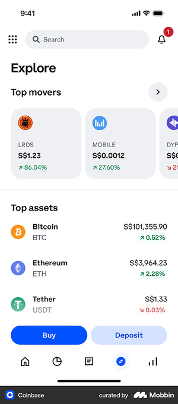
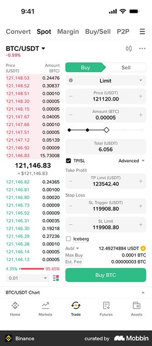
Pattern 2 — Equal-Weight Icon Buttons (Wallet-Style)
Wallet and fintech apps tend to use a row of equal-weight icon buttons — giving equal visual prominence to all actions. This pattern is dominant in 2024–2026 fintech design, optimizing for flexibility and familiarity over conversion-led hierarchy.
Both patterns are current and valid — they simply optimize for different goals. Exchange-style apps lead with hierarchy to drive acquisition; wallet-style apps go equal-weight to serve a broader range of user actions.
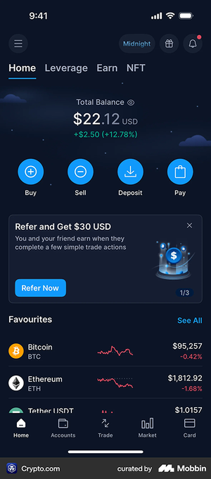
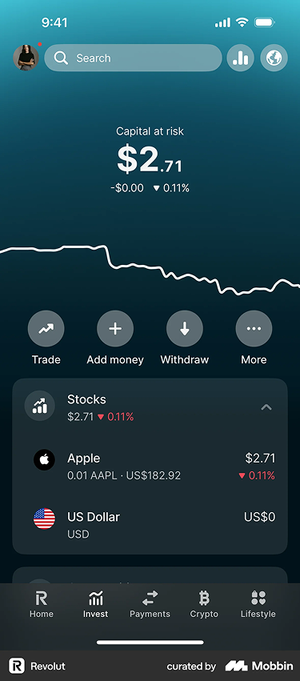
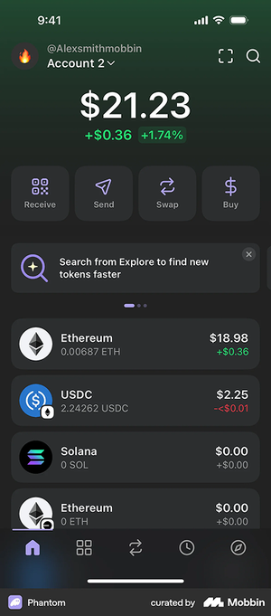
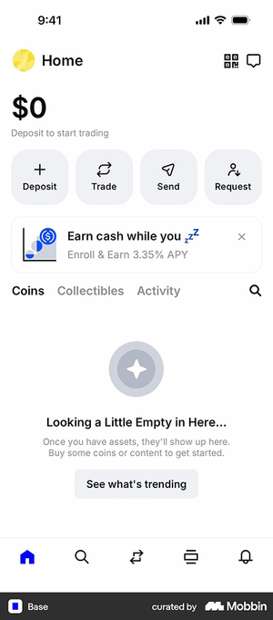
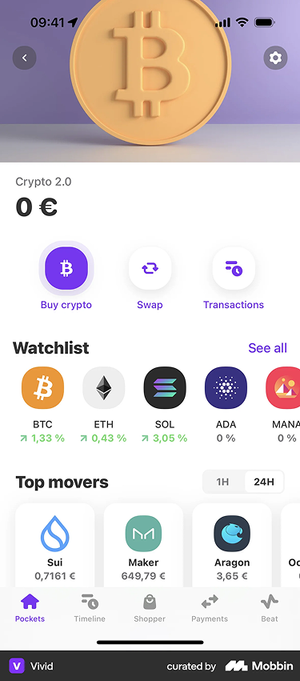
What We Can Follow — and What We Can't
Pattern 1 — Visual Hierarchy (Exchange-Style): Pros & Cons
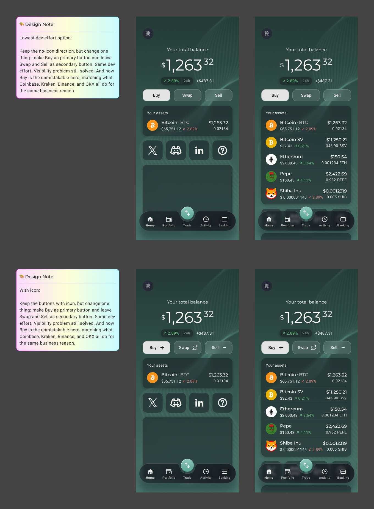
Pros:
- Aligns with a user-validated design pattern — major platforms like Binance, Coinbase, Kraken, and OKX have already adopted this approach, meaning extensive user research backs it. The design has been accepted by a large majority of crypto users
- Making "Buy" the most prominent action creates clear hierarchy, drawing the user's eye to the highest-value entry point. "Buy" is foundational — it's the action that enables everything else: Swap, Sell, and Trade
- Reduces cognitive load by giving users a clear primary action to start with
Cons:
- RockWallet is not positioning itself as a trading-first platform — promoting "Buy" above all else may misrepresent the product's identity as a wallet-focused app
- The goal is to encourage users to explore all three core features equally: Buy, Sell, and Swap — not to funnel users toward a single action
- If three buttons carry different colors and icons, the visual combination can feel crowded and inconsistent — especially in a compact mobile layout
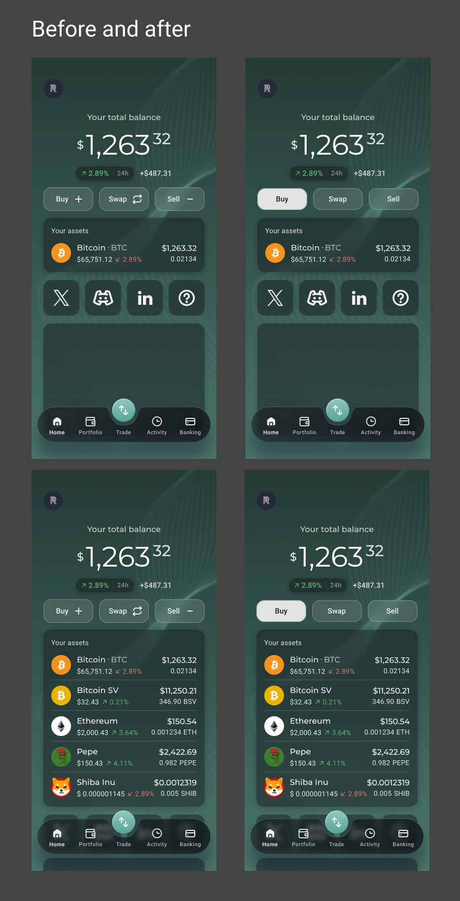
Pattern 2 — Equal-Weight Icon Buttons (Wallet-Style): Pros & Cons
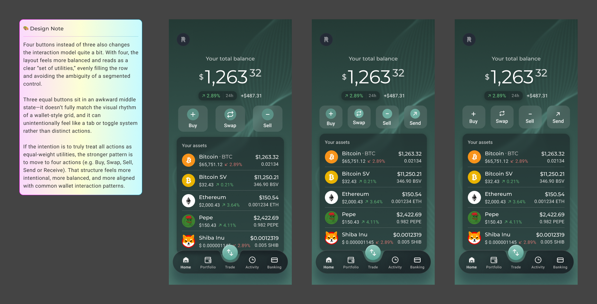
Pros:
- Wallet apps consistently adopt a row of equal-weight icon buttons — giving all actions equal visual prominence, which aligns with RockWallet's goal of encouraging users to explore Buy, Sell, and Swap equally
- The pattern is flexible: buttons can be styled with or without icons, square or round, and remain visually balanced and consistent regardless of variation
- Feels familiar and intuitive to users of modern fintech and wallet apps
Cons:
- RockWallet currently has three main CTAs, and three equal-weight buttons sit in an awkward middle state — they don't fully match the visual rhythm of a wallet-style grid, and can unintentionally read as a tab or toggle system rather than distinct actions. Most platforms that adopt this pattern use four icon buttons, which fills the row evenly and reads clearly as a set of utilities. With only three buttons, the layout feels slightly off-balance and loses the visual confidence that makes this pattern work
- Moving to four actions (e.g. Buy, Swap, Sell, Send or Receive) would better serve this pattern, but that's a scope and product decision beyond this iteration
- Rebuilding this pattern as a new component in the design system would require additional development effort — a real constraint given the MVP context
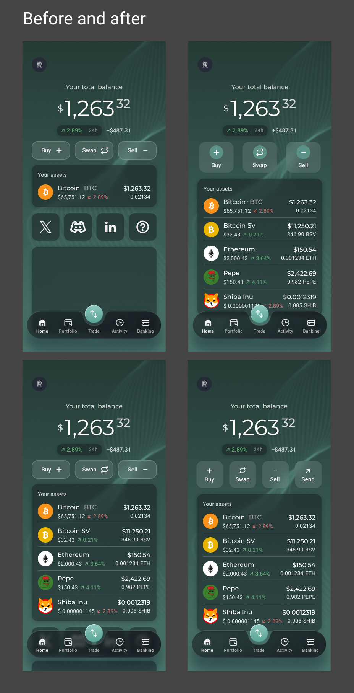
What We Adopted, What We Adapted
Both patterns identified in research had clear merit — but neither could be adopted as-is. The business constraint was clear: post-MVP, development effort needed to be kept to an absolute minimum. A full pattern rebuild or component redesign was off the table.
The design challenge became finding the most impactful change with the least effort — solving the visibility problem without introducing new complexity.
Pattern 1 was compelling but misaligned with the product's identity — RockWallet is not a trading-first platform, and elevating "Buy" above "Swap" and "Sell" would misrepresent the product's goal of encouraging all three core actions equally.
Pattern 2 was the more natural fit for a wallet-focused app — but came with a structural problem. Most platforms that adopt this pattern use four icon buttons, which fills the row evenly and reads clearly as a set of utilities. With only three buttons, the layout sits in an awkward middle state — slightly off-balance, and at risk of reading as a tab or toggle system rather than distinct actions. Adopting this pattern properly would also require rebuilding the component in the design system, adding significant development effort.
After exploring multiple options and weighing the trade-offs, the solution came down to two targeted changes:
- Remove the icons from the buttons — the CTA section sits between two information-dense areas: the balance display above and the assets widget below. Icons on the buttons added visual crowding to an already busy area. Removing them keeps the buttons clean, readable, and focused
- Change the buttons from secondary to primary style — converting the outlined ghost buttons to fully filled primary buttons dramatically increases contrast against the dark green background, making the CTAs immediately visible and easier to notice
This was the lowest dev-effort option — no new components, no layout changes, no design system rebuild. Just a colour adjustment and icon removal. Simple to implement, but directly addressing the root cause of the problem.
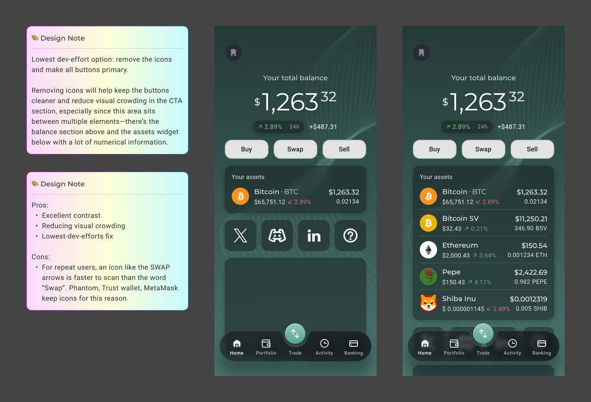
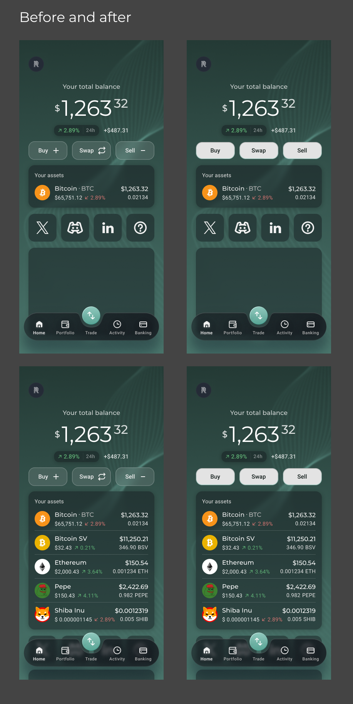
Design Challenges
The challenge wasn't finding the right design — it was finding the right design within real constraints. Post-MVP, development effort had to be minimised, which ruled out both dominant patterns identified in research. The real design work was navigating the gap between what was ideal and what was feasible — researching, exploring options, weighing trade-offs, and arriving at a solution that solved the problem without introducing new complexity.
Collaboration
This iteration was driven by data shared at the product level — the VP of Product surfaced the analytics finding that initiated the project. Working closely with the PM and engineering team, the solution was evaluated not just for its design quality but for its implementation cost. The final decision was a team-aligned one: the lowest-effort change that directly addressed the root cause.
Outcomes
The Answer Was Simple. Getting There Wasn't.
The solution was simple — but the process behind it was not. It took competitive research across more than ten platforms, a careful evaluation of two dominant industry patterns, and a clear-eyed understanding of business and development constraints to arrive at two small changes: remove the icons, fill the buttons.
That restraint was the point. The goal was never to redesign the homepage — it was to solve a specific, data-identified problem with the least friction possible. The result is a homepage CTA section that is more visible, more actionable, and more consistent with how users expect interactive elements to look — without a single new component or layout change.
This project was a reminder that good design isn't always about doing more. Sometimes it's about knowing exactly where to intervene, and having the research to back it up.